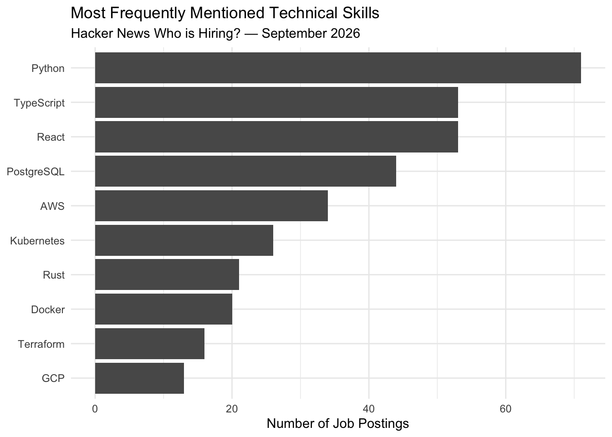

library(rvest)
library(dplyr)
library(stringr)
library(ggplot2)
url <- "https://news.ycombinator.com/item?id=49522897"
page <- read_html(url)What Technical Skills Are Most Commonly Requested in Hacker News Job Postings?
A web-scraping analysis of the September 2026 Hacker News hiring thread
Web Scraping
Jobs
Data Analysis
Question and Motivation
Job seekers interested in technical roles often face a long list of skills to learn, including programming languages, databases, cloud platforms, and development tools. However, time and energy are limited, and it is difficult to develop every skill at once.
This led me to look at real job postings and ask which technical skills appear most frequently in employers’ hiring posts. The results can help job seekers decide which skills may be worth prioritizing and where additional learning may be useful.
They can also provide a practical benchmark for reviewing a resume. If certain technologies appear repeatedly across job postings but are missing from a job seeker’s current skill set or resume, those gaps may be worth examining more closely.
This leads to my main question: What technical skills are most commonly requested in Hacker News job postings?
Collecting Job Postings from Hacker News
For this analysis, I use the September 2026 Hacker News “Who is hiring?” thread. Companies use this thread to post open positions and describe relevant technical requirements.
I use the rvest package in R to collect the publicly available text from these job postings. The page is publicly accessible and does not require a login, CAPTCHA, or paywall.
comments <- page |>
html_elements("tr.comtr")
length(comments)[1] 409comment_text <- comments |>
html_element(".commtext") |>
html_text2()
indent_level <- comments |>
html_element("td.ind") |>
html_attr("indent") |>
as.integer()
job_posts <- tibble(
text = comment_text,
indent = indent_level
) |>
filter(indent == 0)
nrow(job_posts)[1] 268job_posts <- job_posts |>
mutate(
text_lower = str_to_lower(text)
)From Raw Job Posts to Skill Mentions
The scraped job postings are unstructured text, so the next step is to identify whether each posting mentions specific technical skills.
I focus on a set of commonly used technologies. Each skill is counted at most once within each job posting, even if it appears multiple times in the same post. This list is not intended to include every possible technical skill. Instead, it provides a consistent set of commonly used technologies that can be compared across postings.
skill_patterns <- c(
Python = "\\bpython\\b",
SQL = "\\bsql\\b",
JavaScript = "\\bjavascript\\b",
TypeScript = "\\btypescript\\b",
React = "\\breact\\b",
AWS = "\\baws\\b",
GCP = "\\bgcp\\b|google cloud",
Azure = "\\bazure\\b",
Docker = "\\bdocker\\b",
Kubernetes = "\\bkubernetes\\b|\\bk8s\\b",
Terraform = "\\bterraform\\b",
PostgreSQL = "\\bpostgresql\\b|\\bpostgres\\b",
PyTorch = "\\bpytorch\\b",
Rust = "\\brust\\b",
Java = "\\bjava\\b",
Go = "\\bgolang\\b"
)
skill_counts <- tibble(
skill = names(skill_patterns),
count = sapply(
skill_patterns,
function(pattern) {
sum(
str_detect(
job_posts$text_lower,
regex(pattern, ignore_case = TRUE)
),
na.rm = TRUE
)
}
)
) |>
arrange(desc(count))
skill_counts# A tibble: 16 × 2
skill count
<chr> <int>
1 Python 71
2 TypeScript 53
3 React 53
4 PostgreSQL 44
5 AWS 34
6 Kubernetes 26
7 Rust 21
8 Docker 20
9 Terraform 16
10 GCP 13
11 SQL 12
12 JavaScript 12
13 Azure 8
14 Java 8
15 PyTorch 5
16 Go 3Which Skills Appear Most Often?
After identifying the technical skills mentioned in each posting, I counted how many different job postings mentioned each technology. The figure below shows the ten most frequently mentioned skills in the sample.
top_skills <- skill_counts |>
slice_max(order_by = count, n = 10)
ggplot(
top_skills,
aes(
x = reorder(skill, count),
y = count
)
) +
geom_col() +
coord_flip() +
labs(
title = "Most Frequently Mentioned Technical Skills",
subtitle = "Hacker News Who is Hiring? — September 2026",
x = NULL,
y = "Number of Job Postings"
) +
theme_minimal()
Python was the most frequently mentioned skill, appearing in 71 job postings. TypeScript and React were tied for second place with 53 postings each, followed by PostgreSQL with 44 and AWS with 34.
One clear pattern is that the most frequently mentioned technologies cover several different parts of the technical stack. Python represents general programming and data-related work, TypeScript and React are commonly associated with web development, PostgreSQL represents databases, and AWS represents cloud infrastructure.
This suggests that employers in this Hacker News sample are not focused on only one type of technical skill. Instead, demand appears across programming, web development, databases, and cloud infrastructure.
What Do These Results Mean for Job Seekers?
TypeScript and React each appeared in 53 postings, while PostgreSQL and AWS were also relatively common.
For job seekers with limited time, these results can provide a useful reference for deciding what to learn first. Whether someone is still a student or already working, preparing for a job search often requires using limited free time to build new skills. Knowing which technologies are more relevant to a target role can make this process more focused and manageable, instead of trying to learn many different tools at the same time.
For example, someone interested in web development may want to pay more attention to TypeScript and React, while someone interested in backend or data-related roles may benefit from strengthening skills such as Python, PostgreSQL, and AWS.
The results can also help job seekers review their resumes more critically. If a technology appears frequently in the types of jobs they are interested in but is completely missing from their resume or project experience, that may reveal a skill gap worth addressing through further learning or additional project work.
However, a high frequency does not mean that a skill is the most important for every position. These results are better used as a reference for understanding which technologies appear often in this hiring sample and for identifying possible gaps in a job seeker’s current skill set, rather than as a universal ranking of technical skills. For people who are new to the job market, this type of analysis can also be a useful way to learn what different roles require and what abilities they may need to develop for the career path they want to pursue.
Limitations and Takeaway
This analysis has several important limitations. First, Hacker News does not represent the entire job market. The “Who is hiring?” thread is likely to contain a relatively large share of technology companies, startups, and software-related positions. Therefore, the results should be interpreted as evidence from this specific hiring sample rather than as a description of all employers.
Second, this analysis measures whether a technical skill is mentioned in a job posting. A mention does not necessarily mean that the skill is a strict job requirement. Some technologies may appear as part of a company’s existing technology stack, while others may be listed as preferred rather than required skills.
The results also depend on the predefined skill list used in the analysis. Technologies that were not included in the list are not captured in the ranking.
Even with these limitations, the analysis provides a useful way to turn unstructured job-posting text into information that can support real-world decisions. For job seekers, the main takeaway is not that one technology is always the “best,” but that frequently mentioned skills can provide a useful starting point for deciding what to learn, identifying gaps in a resume, and understanding the types of technical abilities that appear across this Hacker News hiring sample.